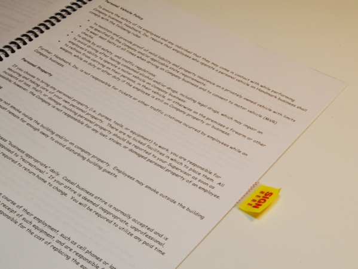

Take, for example, a policy for prioritizing work. It can be done last-in-first-out as a stack, or first-in-first-out as a queue. The exact form of the work item is not important to the method used. It's just a general policy for ordering work.
Public Interface IOrderingPolicy(Of T)
Sub PutItem(ByVal value As T)
Function GetItem() As T
End Interface
Public Class WorkList(Of T As IWorkItem, _
OrderingPolicy As _
{IOrderingPolicy(Of T), New})
Private _orderingPolicy As _
New OrderingPolicy()
Public Sub AddWork(ByVal item As T)
_orderingPolicy.PutItem(item)
End Sub
Public Sub Work()
Dim item As T
item = _orderingPolicy.GetItem
item.DoWork()
End Sub
End Class
public interface IOrderingPolicy<T>
{
void PutItem(T value);
T GetItem();
}
public class WorkList<T, OrderingPolicy>
where OrderingPolicy :
IOrderingPolicy<T>, new()
where T : IWorkItem
{
private OrderingPolicy _orderingPolicy =
new OrderingPolicy();
public void AddWork(T item)
{
_orderingPolicy.PutItem(item);
}
public void Work()
{
T item = _orderingPolicy.GetItem();
item.DoWork();
}
}
The consumer of a policy has two type placeholders: one for the policy and another for the item type that it acts upon. The placeholder for the item type is used in the constraint for the policy type. When the generic type is expanded, the item type needs to be expressed twice. Since generics lack the power of C++ "template template parameters", this redundancy cannot be eliminated.
Public Class FIFO(Of T)
Implements IOrderingPolicy(Of T)
Private _queue As New Queue(Of T)
Public Sub PutItem(ByVal item As T) _
Implements IOrderingPolicy (Of T) _
.PutItem
_queue.Enqueue(item)
End Sub
Public Function GetItem() As T _
Implements IOrderingPolicy(Of T) _
.GetItem
Return _queue.Dequeue()
End Function
End Class
Dim workList As New _
WorkList(Of WorkItem, FIFO(Of WorkItem))
workList.AddWork(New WorkItem)
workList.Work()
public class FIFO<T> : IOrderingPolicy<T>
{
private Queue<T> _queue = new Queue<T>();
public void PutItem(T value)
{
_queue.Enqueue(value);
}
public T GetItem()
{
return _queue.Dequeue();
}
}
WorkList<WorkItem, FIFO<WorkItem>> workList =
new WorkList<WorkItem, FIFO<WorkItem>>();
workList.AddWork(new WorkItem());
workList.Work();
